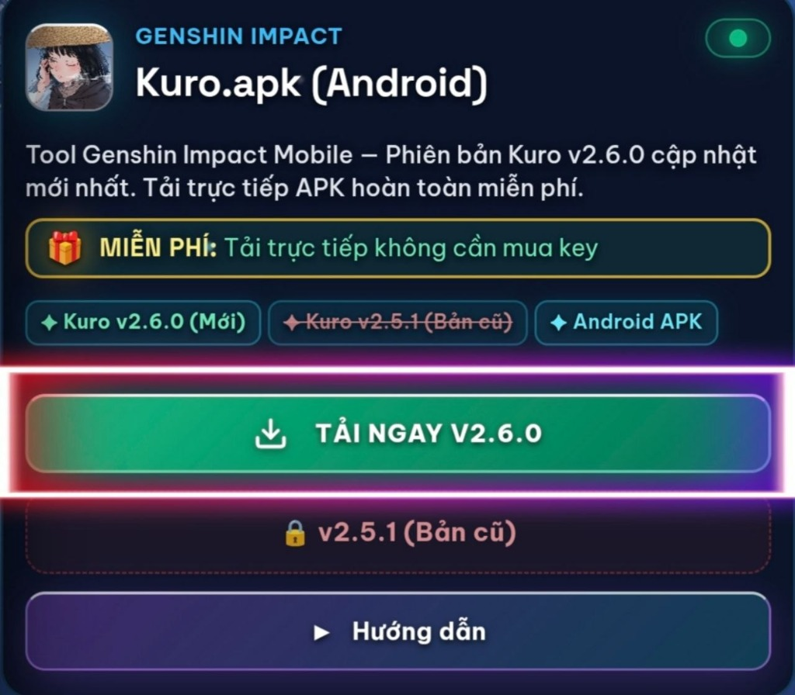
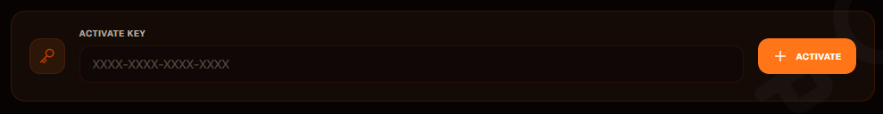

Câu Hỏi Thường Gặp & Xử Lý Nhanh (FAQ)
Tổng hợp giải đáp các vấn đề hay gặp nhất khi mới bắt đầu cài đặt và sử dụng tool1. Bị Windows Defender hoặc Trình diệt Virus chặn không cho tải / mở tool?
Do tool can thiệp vào bộ nhớ game để đọc tọa độ và mở menu nên Windows Defender sẽ nhận diện nhầm là phần mềm lạ (False Positive).
👉 Xem chi tiết cách thêm Exclusion2. Không hiện Menu Tool khi vào game (Bấm F1 / F2 / Insert không phản hồi)?
Có 4 nguyên nhân: Quyền Administrator, chế độ hiển thị game chưa ở Borderless/Windowed, tính năng Smooth Motion NVIDIA đang bật, hoặc app khác chiếm Overlay.
👉 Xem 4 bước sửa lỗi Menu không hiện3. Màn hình xanh BSOD hoặc máy tính bị treo khi vừa bật tool?
Thường do xung đột driver bảo mật với Vanguard, Armory Crate, Roblox hoặc antivirus bên thứ 3.
👉 Xem cách khắc phục màn hình xanh BSOD
Hướng Dẫn Tải & Cài Đặt Tool Kuro.apk (v2.7.0)
Tool Genshin Impact Mobile • Miễn Phí 100% Không Cần Mua KeyBấm nút "TẢI NGAY V2.7.0" trên trang chủ
Tại trang chủ website, cuộn đến mục game Genshin Impact, tìm thẻ công cụ Kuro.apk (Android) và nhấn vào nút màu xanh TẢI NGAY V2.7.0.

Nhập Key mở khóa hoặc tham gia nhóm để lấy link tải Free 100%
Hộp thoại tải nhanh sẽ xuất hiện với 2 cách để bạn nhận file:
- Cách 1 (Nhanh nhất): Nhập Key mở khóa vào ô và nhấn Xác Nhận để tải ngay lập tức. (Mã key tải được cấp công khai 100% miễn phí bên trong nhóm Telegram & Discord).
- Cách 2: Bấm vào nút Kênh Telegram hoặc Server Discord để đợi đếm ngược 120 giây hoặc lấy link tải trực tiếp trong nhóm không cần phải đợi.

Sau khi xác nhận Key hoàn tất, đợi 3s rồi bấm "TẢI XUỐNG NGAY"
Sau khi hệ thống kiểm tra key hoàn tất hoặc kết thúc thời gian đếm ngược, vui lòng chờ khoảng 3 giây. Lúc này nút xanh 📥 TẢI XUỐNG NGAY (Kuro.apk v2.7.0) sẽ sáng lên, bạn click vào để bắt đầu quá trình tải tệp.
Tải xuống tệp KURO-v2.7.0.apk và mở để cài đặt
Trình duyệt / điện thoại sẽ tải về tệp tin cài đặt có tên KURO-v2.7.0.apk. Khi tải xong, hãy nhấn trực tiếp vào tệp trong thanh thông báo hoặc mục Tải xuống (Downloads) của máy.

Tiến hành "Cài đặt" ứng dụng và mở game trải nghiệm
Khi màn hình cài đặt gói ứng dụng của Android hiển thị, nhấn vào nút Cài đặt (Install) ở phía dưới và đợi thiết bị cài đặt xong.
Sau khi hoàn tất, mở game lên, đăng nhập tài khoản và bắt đầu trải nghiệm các tính năng hỗ trợ khám phá miễn phí của Tool Kuro!

Hướng Dẫn Tải & Cài Đặt Tool Eleutheria.apk (v1.72)
Tool Genshin Impact Mobile • Miễn Phí 100% Không Cần Mua KeyBấm nút "TẢI NGAY V1.72" trên trang chủ
Tại trang chủ website, cuộn đến mục game Genshin Impact, tìm thẻ công cụ Eleutheria.apk (Android) và nhấn vào nút màu xanh TẢI NGAY V1.72.
Nhập Key mở khóa hoặc tham gia nhóm để lấy link tải Free 100%
Hộp thoại tải nhanh sẽ xuất hiện với 2 cách để bạn nhận file:
- Cách 1 (Nhanh nhất): Nhập Key mở khóa vào ô và nhấn Xác Nhận để tải ngay lập tức. (Mã key tải được cấp công khai 100% miễn phí bên trong nhóm Telegram & Discord).
- Cách 2: Bấm vào nút Kênh Telegram hoặc Server Discord để đợi đếm ngược 120 giây hoặc lấy link tải trực tiếp trong nhóm không cần phải đợi.
Sau khi xác nhận Key hoàn tất, đợi 3s rồi bấm "TẢI XUỐNG NGAY"
Sau khi hệ thống kiểm tra key hoàn tất hoặc kết thúc thời gian đếm ngược, vui lòng chờ khoảng 3 giây. Lúc này nút xanh 📥 TẢI XUỐNG NGAY sẽ sáng lên, bạn click vào để bắt đầu quá trình tải tệp.
Tải xuống tệp GI_Eleutheria_7.2_v1.72.apk và mở để cài đặt
Trình duyệt / điện thoại sẽ tải về tệp tin cài đặt có tên GI_Eleutheria_7.2_v1.72.apk. Khi tải xong, hãy nhấn trực tiếp vào tệp trong thanh thông báo hoặc mục Tải xuống (Downloads) của máy.
Tiến hành "Cài đặt" ứng dụng và mở game trải nghiệm
Khi màn hình cài đặt gói ứng dụng của Android hiển thị, nhấn vào nút Cài đặt (Install) ở phía dưới và đợi thiết bị cài đặt xong.
Sau khi hoàn tất, mở game lên, đăng nhập tài khoản và bắt đầu trải nghiệm các tính năng Buff Dame, Tăng Dame miễn phí của Tool Eleutheria!
Unicore
Hướng dẫn bằng video bởi: bubiskewl
Làm theo các bước sau để kích hoạt key, tải launcher và khởi chạy Unicore cho Genshin Impact.
#Trước khi bắt đầu
Nếu cần trợ giúp về Unicore, hãy xem hướng dẫn này trước hoặc tham gia máy chủ Unicore Discord.
#Bước 0: Chuẩn bị môi trường cho Unicore (Quan Trọng)
- Tắt Windows Defender (Real-time protection) hoặc dùng tool này: Click tải
- Dùng tool này để scan và setup môi trường: Adwin.zip
- Tải về giải nén và chạy với quyền Admin (chuột phải -> Run As Administrator)
- Cửa sổ cmd hỏi yes/no để scan -> gõ "Y" và Enter
- Sau đó chọn option
2. Unicoređể tool tự động setup môi trường tương thích với Unicore - Sau khi tool chạy xong gõ
Yvà Enter để restart máy.
#Bước 1: Tạo tài khoản
Mở unicore.cloud và tạo tài khoản.
#Bước 2: Thêm key
Mở Dashboard của bạn và nhấp Add Key.
.png)
#Bước 3: Kích hoạt key
Nhập key của bạn, sau đó nhấp Activate.
.png)
#Bước 4: Tải launcher
Sau khi key được kích hoạt, nhấp Download.
.png)
#Bước 5: Chọn trò chơi
Mở launcher và chọn Genshin Impact.
.png)
#Bước 6: Khởi chạy launcher
Nhấp biểu tượng khởi chạy và chờ quá trình tải xuống hoàn tất. Giữ launcher mở trong suốt quá trình này.
.png)
#Bước 7: Tải Unicore
Sau khi launcher hoàn tất tất cả giai đoạn khởi động, hãy mở Genshin Impact.
Tại menu chính của trò chơi, nhấn F2 để tải Unicore.
Để xem các lỗi thường gặp, hãy xem Khắc phục sự cố.
📋 Danh sách tính năng
Shika Beta | Alpha
Làm theo các bước sau để liên kết key, tải loader và khởi chạy Shika cho Genshin Impact.
#Bước 1: Tạo tài khoản tại ShikaHub
Truy cập vào trang chủ: https://shikahub.org/en/auth
Đăng nhập hoặc đăng ký nếu chưa có tài khoản. (Kiểm tra thư rác nếu không thấy mã gửi về).

#Bước 2: Nhập Key Kích Hoạt
Nhập key bản quyền tại: https://shikahub.org/en/dashboard/licenses
Dán mã key đã mua vào ô ACTIVATE KEY rồi nhấp nút + ACTIVATE.

#Bước 3: Tải loader
Mở trang Downloads từ dashboard của bạn và tải loader.
#Bước 4: Chọn và khởi chạy trò chơi
Mở loader, chọn trò chơi bạn muốn sử dụng và nhấp Launch.
.png)
#Bước 5: Mở trò chơi
Mở trò chơi thủ công và chờ menu xuất hiện. Giữ loader mở trong khi trò chơi khởi động.
Shika Mobile
Hướng dẫn này chỉ cách cài đặt và sử dụng Shika Mobile cho Genshin Impact trên điện thoại.
Làm theo các bước theo đúng thứ tự. Bạn chỉ cần thực hiện việc này một lần.
#Trước khi bắt đầu
- Tạo tài khoản tại shikahub.org nếu chưa có.
- Bạn cần một key đang hoạt động.
- Gỡ cài đặt phiên bản gốc của Genshin Impact trước — phiên bản của chúng tôi không thể cài song song.
- Chuẩn bị sẵn thông tin đăng nhập tài khoản.
#Bước 1: Tải launcher
- Mở tài khoản cá nhân tại shikahub.org.
- Truy cập trang Downloads.
- Tải launcher dành cho di động.
- Cài đặt launcher trên thiết bị.
#Bước 2: Đăng nhập và kích hoạt key
- Mở launcher.
- Đăng nhập tài khoản.
- Kích hoạt key của bạn (hoặc nhập key kích hoạt trước tại shikahub.org Licenses).
Nếu bạn đã kích hoạt key trên trang web, có thể bỏ qua bước kích hoạt.
#Bước 3: Gỡ trò chơi gốc
Gỡ cài đặt phiên bản Genshin Impact hiện tại khỏi thiết bị.
Phiên bản của chúng tôi thay thế phiên bản đó nên không thể cài đồng thời cả hai. Bạn chỉ cần làm việc này một lần.
#Bước 4: Tải phiên bản trò chơi của chúng tôi
- Trong launcher, tải phiên bản Genshin Impact của chúng tôi.
- Chờ quá trình tải hoàn tất.
Phiên bản của chúng tôi có một vài thay đổi cần thiết để Shika hoạt động.
#Bước 5: Khởi chạy và chơi
- Khởi chạy trò chơi.
- Đăng nhập tài khoản trò chơi.
Vậy là xong — menu sẽ tự động xuất hiện.
#Thông tin hữu ích
- Bạn có thể tải các bản cập nhật trò chơi trong tương lai trực tiếp qua launcher — không cần đăng ký trả phí.
- Bạn cũng có thể tải lại hình ảnh trò chơi gốc bất cứ lúc nào nếu muốn quay lại.
#Menu không xuất hiện?
- Đóng hoàn toàn trò chơi.
- Khởi chạy lại trò chơi qua launcher.
- Vẫn bị kẹt? Liên hệ đội ngũ hỗ trợ, chúng tôi sẽ giúp bạn sớm nhất có thể.
📋 Tính năng Shika Mobile
Lotus
Thực hiện theo các bước sau để cài đặt và khởi chạy Lotus cho Genshin Impact.
#Bước 1: Tải và cài đặt Lotus
Tham gia máy chủ Discord của Lotus, sau đó mở kênh #releases.
Tải trình cài đặt mới nhất và hoàn tất quá trình cài đặt.
#Bước 2: Nhập key
Nhập key của bạn khi trình cài đặt hoặc launcher yêu cầu.
#Bước 3: Chọn tệp thực thi của trò chơi
Chọn tệp GenshinImpact.exe khi được yêu cầu.
#Bước 4: Khởi chạy trò chơi
Đặt Genshin Impact ở chế độ Borderless hoặc Windowed, sau đó nhấp Start Game.
Chờ trò chơi mở và tải xong.
Nhấn Insert để mở hoặc đóng menu.
📋 Danh sách tính năng
Antiaddict
Dùng hướng dẫn này để kích hoạt key Antiaddict và tải phần mềm.
#Kích hoạt key
#Bước 1: Liên kết tài khoản Discord
Tham gia máy chủ Discord của Antiaddict.
Sau khi mua key, mở trang đăng ký. Liên kết tài khoản Discord và nhập key của bạn.
#Bước 2: Tải phần mềm
Sau khi key được liên kết, mở trang tải xuống và tải phần mềm.
Mở phần mềm đã tải để bắt đầu sử dụng Antiaddict.
#Overlay
Antiaddict hiện chạy bên ngoài nên không có overlay trong trò chơi. Giao diện mở trong một cửa sổ riêng.
Phím tắt overlay trong trò chơi bằng F1 có thể được thêm trong bản cập nhật sau.
📋 Danh sách tính năng
Shibal
#Bước 1:
Làm theo các bước sau để thiết lập Shibal cho Genshin Impact. Hoàn thành từng bước theo đúng thứ tự.
#Bước 1: Tham gia Discord và mở khóa quyền truy cập
Tham gia máy chủ Discord của Shibal và dùng access code của bạn để mở khóa quyền truy cập phần mềm.
#Bước 2: Tải bản phát hành mới nhất
Sau khi dùng access code, mở kênh #update-ɢɪ và tải bản phát hành mới nhất.
#Bước 3: Thêm loại trừ cho phần mềm diệt virus
Thêm ShibalYS.exe vào danh sách loại trừ của phần mềm diệt virus trước khi mở. Phần mềm diệt virus có thể chặn hoặc xóa tệp.
#Bước 4: Khởi chạy Shibal và mở trò chơi
Chạy ShibalYS.exe và chờ đến khi chương trình hiển thị Waiting for process. Sau đó mở Genshin Impact thủ công.
#Bước 5: Mở menu
Nhấn Insert để mở hoặc đóng menu.
📋 Danh sách tính năng
Minty-GI-Mobile
Dùng hướng dẫn này để cài đặt và khởi chạy Minty-GI-Mobile trên Android.
#Tải loader
Tải M-Loader.apk.
Nếu trình duyệt chặn tải xuống, hãy cho phép thủ công. Tùy chọn Download anyway thường xuất hiện.
#Cài đặt loader
- Mở M-Loader.apk đã tải.
- Nếu Android cảnh báo về nguồn không xác định, nhấn Settings, bật Allow from this source, sau đó quay lại trình cài đặt.
- Nếu Play Protect chặn cài đặt, nhấn Install anyway.
Loader tự động cập nhật. Nếu bản cập nhật xuất hiện trên màn hình tải, hãy để quá trình hoàn tất. Loader sẽ tự cài lại và mở lại.
#Lần khởi chạy đầu tiên

- Mở loader và chờ màn hình tải hoàn tất.
Nếu màn hình tải bị kẹt, hãy thử các cách sau:
- Tắt rồi bật lại Wi-Fi hoặc dữ liệu di động.
- Tắt mọi ứng dụng VPN hoặc chặn quảng cáo có lọc lưu lượng.
Khuyến nghị: Thử dùng VPN nếu nhà cung cấp internet của bạn đang chặn máy chủ.
- Vuốt sang tab Game Manager.
#Cài đặt trò chơi đã mod

- Trên thẻ dự án, nhấn Authenticate, sau đó dán key của bạn.
- Nhấn Not Installed, xác nhận cài đặt và chờ.
- Trạng thái sẽ lần lượt chuyển qua Uninstalling → Downloading → Unpacking → Installing.
- Khi trạng thái hiển thị Installed, trò chơi đã mod đã sẵn sàng.
Quá trình này chỉ cần thực hiện một lần. Trò chơi giữ lại tài nguyên đã tải nên không cần tải lại toàn bộ.
#Khởi chạy và kích hoạt
- Mở dự án và nhấn Start.
- Nếu xuất hiện Close the game first, hãy đóng hoàn toàn trò chơi và nhấn Start lại.
- Chờ thông báo Loaded!, sau đó mở trò chơi.
Chờ sản phẩm kích hoạt xong trước khi sử dụng.
📋 Danh sách tính năng
Slash Bypass
#Để sử dụng, bạn cần có quyền truy cập vào menu tool khác.
Máy chủ Slash: Máy chủ Discord
Máy chủ Yokai: Máy chủ Discord
Máy chủ Jawir: Máy chủ Discord
Máy chủ Lotus: Máy chủ Discord
Máy chủ Shika: Máy chủ Discord
Tải Bypass (Chỉ thành viên trả phí mới truy cập được)
Unistar
Hướng dẫn bằng video bởi: bubiskewl
Làm theo các bước sau để kích hoạt key, tải launcher và khởi chạy Unistar cho Honkai: Star Rail.
#Trước khi bắt đầu
Nếu cần trợ giúp về Unistar, hãy xem hướng dẫn này trước hoặc tham gia máy chủ Unicore Discord.
#Bước 1: Tạo tài khoản
Mở unicore.cloud và tạo tài khoản.
#Bước 2: Thêm key
Mở Dashboard của bạn và nhấp Add Key.
#Bước 3: Kích hoạt key
Nhập key của bạn, sau đó nhấp Activate.
#Bước 4: Tải launcher
Sau khi key được kích hoạt, nhấp Download.
#Bước 5: Chọn trò chơi
Mở launcher và chọn Honkai: Star Rail.
#Bước 6: Khởi chạy launcher
Nhấp biểu tượng khởi chạy và chờ quá trình tải xuống hoàn tất. Giữ launcher mở trong suốt quá trình này.
#Bước 7: Tải Unistar
Sau khi launcher hoàn tất tất cả giai đoạn khởi động, hãy mở Honkai: Star Rail.
Tại menu chính của trò chơi, nhấn F2 để tải Unistar.
Để xem các lỗi thường gặp, hãy xem Khắc phục sự cố.
📋 Danh sách tính năng
Kittenwaves
Làm theo các bước sau để chuẩn bị và khởi chạy Kittenwaves cho Wuthering Waves. Hoàn thành từng bước theo đúng thứ tự.
#Bước 1: Mở thư mục plugin Nvidia
Mở thư mục này trong bản cài đặt Wuthering Waves:
\Wuthering Waves Game\Engine\Plugins\Runtime\Nvidia\
#Bước 2: Xóa Streamline
Chỉ xóa thư mục Streamline trong thư mục plugin Nvidia đã chỉ định.
#Bước 3: Đặt tệp DLL
Đặt tệp DLL được cung cấp vào cùng thư mục với loader.
#Bước 4: Khởi động loader
Mở loader.
#Bước 5: Chọn tệp trò chơi
Chọn tệp thực thi của trò chơi:
\Wuthering Waves Game\Client\Binaries\Win64\Client-Win64-Shipping.exe
#Bước 6: Mở menu
Nhấn Insert trong trò chơi để mở menu.
#Khắc phục sự cố
- Trò chơi không khởi động: Đóng cả trò chơi và loader trong Task Manager, sau đó thử lại.
- Không có menu sau khi tải: Tắt tất cả overlay, chẳng hạn như RivaTuner hoặc NVIDIA ShadowPlay, rồi khởi động lại trò chơi.
- Trò chơi bị crash hoặc không hoạt động: Đóng mọi thứ và lặp lại các bước thiết lập.
- Loader vẫn yêu cầu xóa Streamline: Thêm
-dx11vàogamepath.txt, sau đó thử lại.
📋 Danh sách tính năng
Slash WuWa
Hướng dẫn bằng video bởi: bubiskewl
Làm theo các bước sau để nhận key, liên kết HWID và khởi chạy Slash cho Wuthering Waves. Hoàn thành từng bước theo đúng thứ tự.
#Bước 1: Nhận key
Tham gia máy chủ Discord của Slash, sau đó mở các kênh #claim-key và #hwid-check-tools.
Tải Wuthering_Waves_HWID_Tools.exe.
.png)
#Bước 2: Nhập key
Mở bảng Wuthering Waves, nhấp Claim Key và nhập key của bạn.
.png)
#Bước 3: Liên kết HWID
Mở Wuthering_Waves_HWID_Tools.exe. Sao chép HWID hiển thị trong console, sau đó liên kết với key của bạn.
#Bước 4: Tải loader
Sau khi kích hoạt key và liên kết HWID, mở kênh #📂-slash-loader-download và tải phiên bản loader mới nhất.
Giải nén tệp lưu trữ đã tải trước khi mở loader. Nếu cần, tải WinRAR để giải nén.
.png)
#Bước 5: Chọn tệp trò chơi và khởi chạy Slash
Sau khi giải nén các tệp, mở SLASH HUB.exe.
- Nhấp Browse và chọn tệp thực thi của trò chơi Wuthering Waves. Không chọn launcher của trò chơi.
- Nhấp Save.
- Nhấp Start.
Chờ Slash tải xong, sau đó mở Wuthering Waves khi được nhắc.
.png)
📋 Danh sách tính năng
Minty-SR
Trang này hướng dẫn cách tải Minty cho Honkai: Star Rail. Làm theo các bước theo đúng thứ tự và chờ từng bước hoàn tất trước khi tiếp tục.
#Khắc phục sự cố
Nếu gặp sự cố, hãy xem hướng dẫn này trước hoặc tham gia máy chủ Discord.
#Bước 1: Tải loader
Tải loader từ liên kết tải xuống.
Thêm thư mục loader vào danh sách loại trừ của phần mềm diệt virus trước khi mở. Phần mềm diệt virus có thể chặn hoặc xóa loader.
#Bước 2: Mở loader và nhập key
- Mở loader.
- Chọn Honkai: Star Rail.
- Nhập key của bạn.
#Bước 3: Khởi động từ loader
Nhấp Start Game trong loader.
#Bước 4: Mở trò chơi
Mở Honkai: Star Rail thủ công và chờ Minty inject.
#Bước 5: Mở menu
Nhấn Insert để mở hoặc đóng menu.
Torako Mobile
Hướng dẫn này chỉ cách cài đặt và sử dụng Torako Mobile cho Wuthering Waves trên điện thoại.
Làm theo các bước theo đúng thứ tự. Bạn chỉ cần thực hiện việc này một lần.
#Trước khi bắt đầu
- Tạo tài khoản tại shikahub.org nếu chưa có.
- Bạn cần một key đang hoạt động.
- Gỡ cài đặt phiên bản gốc của Wuthering Waves trước — phiên bản của chúng tôi không thể cài song song.
- Chuẩn bị sẵn thông tin đăng nhập tài khoản.
#Bước 1: Tải launcher
- Mở tài khoản cá nhân tại shikahub.org.
- Truy cập trang Downloads.
- Tải launcher dành cho di động.
- Cài đặt launcher trên thiết bị.
#Bước 2: Đăng nhập và kích hoạt key
- Mở launcher.
- Đăng nhập tài khoản.
- Kích hoạt key của bạn (hoặc nhập key kích hoạt trước tại shikahub.org Licenses).
Nếu bạn đã kích hoạt key trên trang web, có thể bỏ qua bước kích hoạt.
#Bước 3: Gỡ trò chơi gốc
Gỡ cài đặt phiên bản Wuthering Waves hiện tại khỏi thiết bị.
Phiên bản của chúng tôi thay thế phiên bản đó nên không thể cài đồng thời cả hai. Bạn chỉ cần làm việc này một lần.
#Bước 4: Tải phiên bản trò chơi của chúng tôi
- Trong launcher, tải phiên bản Wuthering Waves của chúng tôi.
- Chờ quá trình tải hoàn tất.
Phiên bản của chúng tôi có một vài thay đổi cần thiết để Shika hoạt động.
#Bước 5: Khởi chạy và chơi
- Khởi chạy trò chơi.
- Đăng nhập tài khoản trò chơi.
Vậy là xong — menu sẽ tự động xuất hiện.
#Thông tin hữu ích
- Bạn có thể tải các bản cập nhật trò chơi trong tương lai trực tiếp qua launcher — không cần đăng ký trả phí.
- Bạn cũng có thể tải lại hình ảnh trò chơi gốc bất cứ lúc nào nếu muốn quay lại.
#Menu không xuất hiện?
- Đóng hoàn toàn trò chơi.
- Khởi chạy lại trò chơi qua launcher.
- Vẫn bị kẹt? Liên hệ đội ngũ hỗ trợ, chúng tôi sẽ giúp bạn sớm nhất có thể.
Unizone
Hướng dẫn bằng video bởi: bubiskewl
Làm theo các bước sau để kích hoạt key, tải launcher và khởi chạy Unizone cho Zenless Zone Zero.
#Trước khi bắt đầu
Nếu cần trợ giúp về Unizone, hãy xem hướng dẫn này trước hoặc tham gia máy chủ Unicore Discord.
#Bước 1: Tạo tài khoản
Mở unicore.cloud và tạo tài khoản.
#Bước 2: Thêm key
Mở Dashboard của bạn và nhấp Add Key.
#Bước 3: Kích hoạt key
Nhập key của bạn, sau đó nhấp Activate.
#Bước 4: Tải launcher
Sau khi key được kích hoạt, nhấp Download.
#Bước 5: Chọn trò chơi
Mở launcher và chọn Zenless Zone Zero.
#Bước 6: Khởi chạy launcher
Nhấp biểu tượng khởi chạy và chờ quá trình tải xuống hoàn tất. Giữ launcher mở trong suốt quá trình này.
#Bước 7: Tải Unizone
Sau khi launcher hoàn tất tất cả giai đoạn khởi động, hãy mở Zenless Zone Zero.
Tại menu chính của trò chơi, nhấn F2 để tải Unizone.
Để xem các lỗi thường gặp, hãy xem Khắc phục sự cố.
📋 Danh sách tính năng
Minty-ZZZ
Trang này hướng dẫn cách tải Minty cho Zenless Zone Zero. Làm theo các bước theo đúng thứ tự và chờ từng bước hoàn tất trước khi tiếp tục.
#Khắc phục sự cố
Nếu gặp sự cố, hãy xem hướng dẫn này trước hoặc tham gia máy chủ Discord.
#Bước 1: Tải loader
Tải loader từ liên kết tải xuống.
Thêm thư mục loader vào danh sách loại trừ của phần mềm diệt virus trước khi mở. Phần mềm diệt virus có thể chặn hoặc xóa loader.
#Bước 2: Mở loader và nhập key
- Mở loader.
- Chọn Zenless Zone Zero.
- Nhập key của bạn.
#Bước 3: Khởi động từ loader
Nhấp Start Game trong loader.
#Bước 4: Mở trò chơi
Mở Zenless Zone Zero thủ công và chờ Minty inject.
#Bước 5: Mở menu
Nhấn Insert để mở hoặc đóng menu.
Slash - Aniimo
Làm theo các bước sau để nhận key, liên kết HWID và khởi chạy Slash cho Aniimo. Hoàn thành từng bước theo đúng thứ tự.
#Bước 1: Nhận key
Tham gia máy chủ Discord của Slash, sau đó mở các kênh #claim-key và #hwid-check-tools.
Tải công cụ HWID cho trò chơi đầu tiên bạn dự định sử dụng. Bạn có thể dùng Wuthering_Waves_HWID_Tools.exe hoặc Solo_Leveling_HWID_Tools.exe.
.png)
#Bước 2: Nhập key
Trong bảng Wuthering Waves hoặc Solo Leveling: ARISE, nhấp Claim Key và nhập key của bạn.
.png)
#Bước 3: Liên kết HWID
Mở công cụ HWID đã tải ở Bước 1. Sao chép HWID hiển thị trong console, sau đó liên kết với key của bạn.
#Bước 4: Tải loader
Sau khi kích hoạt key và liên kết HWID, mở kênh #📂-slash-loader-download và tải phiên bản loader mới nhất.
Giải nén tệp lưu trữ đã tải trước khi mở. Nếu cần, tải WinRAR để giải nén các tệp.
#Bước 5: Khởi chạy Slash
Mở loader, tìm Aniimo trong danh sách trò chơi và nhấp Start.
.png)
#Bước 6: Mở trò chơi
Chờ cửa sổ console tải xong. Mở Aniimo khi loader nhắc bạn.
📋 Ukai
Làm theo các bước sau để thiết lập Ukai và mở Ukai trong Aniimo.
#1. Tạo tài khoản và liên kết key
- Truy cập https://shikahub.org/en và tạo tài khoản.
- Đăng nhập, sau đó liên kết key của bạn với tài khoản đó.
Bạn cần liên kết key trước khi có thể tải loader.
#2. Tải loader
- Mở trang tải xuống trong dashboard của bạn.
- Tải loader và lưu ở nơi dễ tìm.
- Mở loader sau khi quá trình tải hoàn tất.
#3. Khởi chạy Ukai từ loader
- Trong loader, chọn Ukai.
- Nhấp Launch.
Thao tác này chỉ khởi động Ukai. Trò chơi sẽ không tự mở.
#4. Mở trò chơi và chờ menu
- Tự khởi động Aniimo.
- Ở trong trò chơi cho đến khi menu Ukai xuất hiện.
Menu có thể mất một chút thời gian để xuất hiện. Hãy giữ trò chơi mở và chờ.
Khắc phục sự cố
Bạn có thể tìm thấy một số lỗi thường gặp và cách khắc phục bên dưới.
Giải thích vì sao chương trình bị antivirus gắn cờ và cách loại trừ.
Core Isolation, độ phân giải Borderless, Smooth Motion NVIDIA và Overlay.
Xử lý xung đột driver bảo mật với Vanguard, Armory Crate, Roblox hoặc antivirus.
Quyền Administrator, Visual C++ All-in-One và exploit driver installation.
Khắc phục sự cố mạng, máy chủ gián đoạn, tắt VPN/Proxy và đổi DNS 1.1.1.1.
Cách tạo ticket yêu cầu Reset HWID khi đổi linh kiện hoặc chuyển sang máy tính khác.
Vì sao chương trình bị phần mềm diệt virus gắn cờ?
Giải thích về việc bị phần mềm diệt virus phát hiện

Đây là kết quả dương tính giả. Mọi phần mềm riêng tư chất lượng cao được thiết kế để vượt qua anti-cheat đều sử dụng các kỹ thuật bị phần mềm diệt virus coi là đáng ngờ — đơn giản vì đây cũng là những kỹ thuật mà mã độc thực sự sử dụng. Cảnh báo của phần mềm diệt virus là dấu hiệu cho thấy phần mềm đang hoạt động ở cấp độ hệ thống thấp.
H: Một cheat không kích hoạt phát hiện của phần mềm diệt virus có tốt hơn không?
Không. Phần mềm riêng tư không kích hoạt phần mềm diệt virus hoặc là thiếu các thao tác cấp thấp cần thiết (nhiều khả năng sẽ thất bại trước các anti-cheat nghiêm ngặt) hoặc đã nằm trong cơ sở dữ liệu chữ ký của anti-cheat.
H: 40/72 phát hiện trên VirusTotal có bình thường không?
Có, hoàn toàn bình thường. Đây không phải là phát hiện một loại virus cụ thể — mà là phát hiện trình bảo vệ Themida dùng để che mã. Themida là phần mềm thương mại hợp pháp dùng để bảo vệ chương trình khỏi bị dịch ngược.
W64/Themida.WN Win64/Packed.Themida.Q Suspicious App Generic.Packed UnsafeH: Nhưng 40 phát hiện không phải là quá nhiều sao?
Nghịch lý là virus thực sự thường có 0–5 phát hiện trên VirusTotal, không phải 40. Nhà phát triển mã độc kiểm tra tệp trên VT trước khi phát tán và dùng cryptor riêng. Chúng tôi dùng Themida — một protector thương mại công khai. Chúng tôi không cần trốn tránh phần mềm diệt virus; chúng tôi cần bảo vệ mã khỏi bị anti-cheat phân tích.
Số lượng phát hiện cao trên VT với nhãn như "Themida/Packed/Suspicious" là dấu hiệu của phần mềm được bảo vệ hợp pháp, không phải virus. Việc bị phần mềm diệt virus phát hiện là tác dụng phụ của các công nghệ cần thiết để hoạt động ở cấp kernel.
Không hiển thị menu tool
#1. Tắt Core Isolation/Memory Integrity
#2. Sửa độ phân giải của game
- Chỉnh về Borderless (Không viền) hoặc Cửa sổ (Windowed)

#3. Tắt Smooth Motion (Card NVIDIA 4000 và 5000 Series)
- Mở NVIDIA APP -> Graphics -> Game tương ứng / Global Settings
- Tắt Smooth Motion như trong ảnh dưới:

#4. Tắt các app khác đang chiếm dụng Overlay (nếu có)
- MSI Afterburner (Riva Tunner)
- Discord Game Overlay
Màn hình xanh/đen / BSOD / PC bị treo
Cách khắc phục sự cố màn hình xanh

Nguyên nhân chính là lỗi trong quá trình khởi tạo trình điều khiển. Trong hầu hết trường hợp, nguyên nhân là xung đột với phần mềm bảo mật hoặc các tính năng bảo mật đang hoạt động.
Cảnh báo bảo mật: BSOD có thể cho thấy vấn đề nghiêm trọng về trình điều khiển hoặc phần cứng. Hãy tạo điểm khôi phục và sao lưu dữ liệu quan trọng trước. Việc xóa phần mềm bảo mật hoặc tắt dịch vụ sẽ làm giảm mức bảo vệ hệ thống. Chỉ sử dụng phần mềm đáng tin cậy, chỉ tắt các dịch vụ bên thứ ba không thiết yếu và khôi phục cài đặt sau khi kiểm tra.
#1. Gỡ phần mềm diệt virus gây xung đột
Quét máy tính bằng Antivirus Removal Tool và gỡ các phần mềm diệt virus bên thứ ba gây xung đột, chẳng hạn như Kaspersky, Avast, Avira hoặc 360 Total Security.
#2. Tắt phần mềm chơi game gây xung đột
Tắt hoàn toàn hoặc gỡ cài đặt phần mềm chơi game liên quan đến chuột và bàn phím, chẳng hạn như:
- Armory Crate Service (bắt buộc phải xóa)
- Roblox (bắt buộc phải tắt)
- Vanguard (nếu làm các bước trên vẫn bị BSOD thì gỡ)
- Razer Cortex
- Razer Synapse
- Corsair RGB control
#3. Gỡ các bản vá Windows Update mới nhất

Một số update win mới có thể chưa được Unicore hỗ trợ, hãy tạm thời downgrade và chặn update windows để trải nghiệm dùng tool được ổn định.
Unicore chạy ổn định nhất ở Win 10 và winver build 24H2 trở xuống
CPU Intel hỗ trợ kém hơn AMD.
#4. Mở System Configuration
Nhấn Win + R, nhập msconfig và nhấn Enter.

#5. Tắt các service bên thứ ba để kiểm tra
Mở tab Services, đánh dấu Hide all Microsoft services, sau đó nhấp Disable all. Khởi động lại hệ thống sau khi tắt các dịch vụ không phải của Microsoft.
- Lưu ý cách này có thể làm một số app khác trên máy bạn không hoạt động được vì đã tắt service của nó.
- Chỉ làm nếu như bạn thực sự hiểu rõ mình đang làm gì.

Sau khi kiểm tra, quay lại msconfig và bật lại các service cần thiết. Nếu sự cố vẫn tiếp diễn, hãy liên hệ Support.
#6. Cài lại Windows (trong trường hợp hết cứu)
- Nếu cài lại Win -> hãy chọn các phiên bản win 24H2 trở về trước vì ổn định cao.
Loader không chạy khi khởi động
Cách khắc phục sự cố khởi động loader

Không có phản hồi từ loader / Loader biến mất khỏi Task Manager sau 3–4 giây. Trước tiên, hãy xác định vấn đề:
- Tiến trình
launcher.exebiến mất khỏi Task Manager sau 3–4 giây. - Tiến trình
launcher.exebị kẹt trong Task Manager; loader không mở.
Cảnh báo bảo mật: Việc dùng VPN và thay đổi tường lửa có thể ảnh hưởng đến quyền riêng tư và bảo mật hệ thống. Chỉ sử dụng phần mềm đáng tin cậy. Tránh tắt bảo vệ tường lửa vĩnh viễn; ưu tiên chỉ cho phép các ứng dụng đáng tin cậy đi qua Windows Firewall, sau đó khôi phục bảo vệ khi kiểm tra xong.
#Tiến trình biến mất khỏi Task Manager sau 3–4 giây
- Khởi động lại PC và thử lại. Trong một số ít trường hợp, khởi động lại đơn giản sẽ khắc phục sự cố.
- Cài đặt thư viện DirectX mới nhất: Tải DirectX
- Dùng VPN đáng tin cậy trước khi khởi chạy loader.
- Nếu nghi ngờ tường lửa đang chặn, hãy làm theo hướng dẫn khắc phục tường lửa và dùng tùy chọn ít ảnh hưởng nhất hiện có.
#Tiến trình bị kẹt trong Task Manager trong thời gian dài
- Nếu tiến trình có vẻ bị treo trong Task Manager, hãy để yên 5–10 phút. Đây là hiện tượng bình thường và thường do tải tệp từ máy chủ chậm.
- Để tăng tốc quá trình tải xuống, hãy dùng VPN đáng tin cậy hoặc làm theo hướng dẫn bằng video để chuyển máy chủ.
- Nếu nghi ngờ tường lửa đang chặn, hãy làm theo hướng dẫn khắc phục tường lửa và dùng tùy chọn ít ảnh hưởng nhất hiện có.
Đôi khi việc khởi động chế độ chẩn đoán cũng mất thời gian. Không đóng hoặc khởi động lại loader — mỗi lần khởi động lại sẽ làm gián đoạn quá trình tải và bắt đầu lại từ đầu.
📋 Unable to install exploit driver
Cách khắc phục lỗi cài đặt trình điều khiển

Lỗi Unable to install exploit driver có thể xảy ra khi Exploit Protection của Windows chặn thao tác của trình điều khiển cần thiết.
Cảnh báo bảo mật: Exploit Protection giúp bảo vệ Windows khỏi mã độc. Không tắt tính năng này trừ khi bạn tin tưởng phần mềm và hiểu rõ rủi ro. Ưu tiên chỉ thay đổi cài đặt của một chương trình cụ thể, nếu được hỗ trợ, và khôi phục bảo vệ sau khi khắc phục sự cố.
#1. Mở Exploit Protection
Mở Windows Security và truy cập Exploit protection.
#2. Xem lại cài đặt Exploit Protection
Xem lại các cài đặt đang chặn ứng dụng hoặc trình điều khiển đáng tin cậy. Tránh tắt bảo vệ toàn hệ thống khi có thể thêm ngoại lệ cho từng ứng dụng.

Khởi động lại Windows và thử lại. Bật lại mọi biện pháp bảo vệ đã tạm tắt trong quá trình khắc phục sự cố.
FATAL ERROR! Connection error
Cách khắc phục lỗi kết nối

Sự cố có thể xảy ra nếu cả tám máy chủ đều không xử lý được yêu cầu hoặc nếu thời gian trên Windows không được đồng bộ.
#Lỗi này do sai lệch thời gian của máy, chỉ cần đồng bộ lại thời gian:

Nếu sự cố vẫn tiếp diễn sau khi đồng bộ thời gian, hãy thử kết nối qua một dịch vụ VPN đáng tin cậy. Kết nối internet hoặc nhà mạng của bạn có thể đang chặn truy cập đến máy chủ.
📋 Internal Server Error
Cách khắc phục lỗi máy chủ

Sự cố có thể xảy ra do lỗi tạm thời từ phía máy chủ.
Cảnh báo bảo mật: Không tắt tường lửa vĩnh viễn. Hãy dùng VPN đáng tin cậy và chỉ cho phép các ứng dụng đáng tin cậy đi qua Windows Firewall khi có thể. Khôi phục bảo vệ sau khi kiểm tra.
#1. Thử kết nối VPN
Thử dùng kết nối VPN đáng tin cậy để kiểm tra xem sự cố có được giải quyết không.
#2. Kiểm tra quyền truy cập tường lửa
Nếu nghi ngờ tường lửa đang chặn, hãy cho phép loader đáng tin cậy đi qua Windows Firewall hoặc tạm tắt bảo vệ tường lửa chỉ để kiểm tra. Bật lại ngay sau đó.
#3. Liên hệ hỗ trợ
Nếu sự cố vẫn tiếp diễn, hãy liên hệ Support.
Hardware Mismatch
Lỗi không khớp Hardware ID

Khi khởi chạy loader từ một thiết bị khác, cần đặt lại HWID (Hardware ID).
Để đặt lại HWID, hãy vào server Discord Unicore và tạo ticket support Reset HWID.